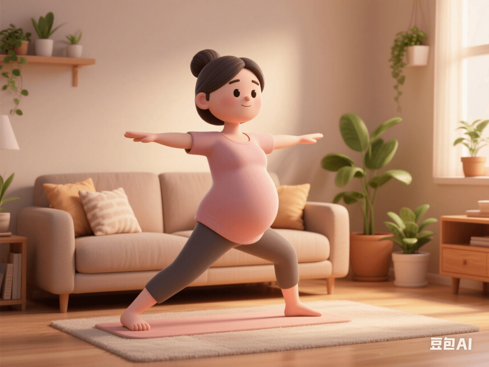

Updated Pregnancy Fitness Guide: Maintain 80% Max Heart Rate During Pregnancy (Without Complications)
PeaceLove.Top Insights :2025-04-12
Introduction
With in - depth research on exercise during pregnancy, more and more medical experts and fitness coaches are supporting appropriate exercise for pregnant women. This change can not only help pregnant women maintain a healthy weight and promote blood circulation but also contribute positively to a smooth delivery. The latest pregnancy fitness guide recommends that pregnant women without complications can maintain their heart rate at 80% of the maximum heart rate during pregnancy. This recommendation breaks the traditional view and brings a new fitness perspective for expectant mothers! ✨
🏋️♀️ Benefits of Appropriate Exercise
1️⃣ Enhance Cardiopulmonary Function
Moderate exercise can improve the cardiopulmonary health of pregnant women and increase the body's efficiency in using oxygen. The improvement of cardiopulmonary function can help pregnant women better cope with the physical exertion during childbirth and shorten the recovery period. 🫁
2️⃣ Control Weight Gain
Weight management during pregnancy has always been a key concern. Moderate exercise helps pregnant women burn calories, reducing the risk of rapid weight gain and preventing problems such as gestational diabetes and gestational hypertension. ⚖️
3️⃣ Relieve Pregnancy Discomforts
Many pregnant women experience discomforts such as back pain, leg swelling, and fatigue during pregnancy. Gentle exercises like yoga, walking, and swimming can effectively relieve these problems and keep expectant mothers energetic. 🧘♀️
🏃♀️ Heart Rate Management: 80% of Maximum Heart Rate
1️⃣ Calculation Method of Maximum Heart Rate
The maximum heart rate is usually calculated by the following formula: Maximum heart rate = 220 - age. For example, a 30 - year - old expectant mother has a maximum heart rate of 190 beats per minute. During exercise, she can maintain her heart rate at around 152 beats per minute (190×80%). 💓
2️⃣ Why Is 80% Intensity Suitable for Pregnant Women?
Moderate exercise intensity during pregnancy can effectively enhance the physical strength and endurance of pregnant women without overloading the body. 80% of the maximum heart rate means that expectant mothers can exercise in a relatively comfortable state without over - stimulating the body. Especially in the absence of complications, maintaining an appropriate heart rate intensity can ensure the health of both the mother and the baby to the greatest extent. 🌿
🤰 Suitable Exercise Programs for Pregnant Women
1️⃣ Swimming
Swimming is a very suitable exercise for pregnant women. The buoyancy in the water can reduce the body's weight, avoid joint pressure, and reduce back and joint pain. Moreover, the environment with a suitable water temperature can also help relax the body and relieve stress. 🌊
2️⃣ Prenatal Yoga
Prenatal yoga helps strengthen the core muscle group, improve body flexibility, and promote deep breathing. Through relaxation and meditation exercises, expectant mothers can effectively reduce anxiety and tension and maintain mental health. 🧘♀️
3️⃣ Brisk Walking or Jogging
Brisk walking and jogging are simple and effective exercise methods, especially in the second trimester of pregnancy. They help improve cardiopulmonary health and maintain physical strength without over - stimulating the body. ⛹️♀️
4️⃣ Strength Training
Moderate strength training can increase muscle endurance and strength, help pregnant women improve their posture, and relieve back pain. Make sure to use light weights, a small number of repetitions, and avoid over - stretching. 💪
⚠️ Precautions: Safety First
Although exercise has many benefits, pregnant women still need to pay special attention to the following points when doing any exercise:
1️⃣ Avoid High - intensity and Strenuous Exercise
Pregnant women should avoid strenuous high - impact exercises such as jumping or fast running, which may put excessive pressure on the abdomen and affect the safety of the fetus. 🚫
2️⃣ Always Pay Attention to Body Signals
If you experience discomfort symptoms such as dizziness, shortness of breath, or chest pain during exercise, stop immediately and seek medical advice. 🆘
3️⃣ Follow the Doctor's Advice
Each pregnant woman's physical condition is different. Therefore, it is best to communicate with an obstetrician before starting any exercise program to ensure the safety and suitability of the exercise. 👩⚕️
🎉 Conclusion: Exercise Adds a Healthy Glow to Pregnancy
The updated pregnancy fitness guide provides expectant mothers with more scientific and flexible exercise options. By doing moderate exercise under the doctor's guidance, pregnant women can not only maintain physical health, relieve pregnancy discomforts but also lay a solid foundation for a smooth delivery and postpartum recovery.
Let's take healthy steps together to welcome the arrival of the baby! 🤰💪👶